Manual de Usuario
Guía visual de la plataforma web de la Asociación Civil Canales. Este documento presenta las principales pantallas y funcionalidades disponibles en el estado actual del proyecto.
1. Introducción
La plataforma web CANALESW tiene como objetivo centralizar la información institucional de la Asociación Civil Canales y facilitar el acceso a sus proyectos, recursos, actividades y medios de colaboración.
El sitio se encuentra actualmente en desarrollo. Por este motivo, algunas pantallas y funcionalidades pueden continuar modificándose durante las siguientes etapas del proyecto.
1.1 Página de inicio
La página principal presenta el acceso general a los contenidos y secciones de la plataforma.
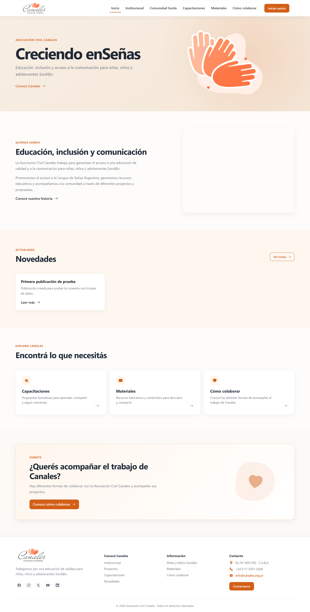
3. Información institucional
Esta sección presenta información relacionada con la Asociación Civil Canales, su trabajo y sus objetivos.
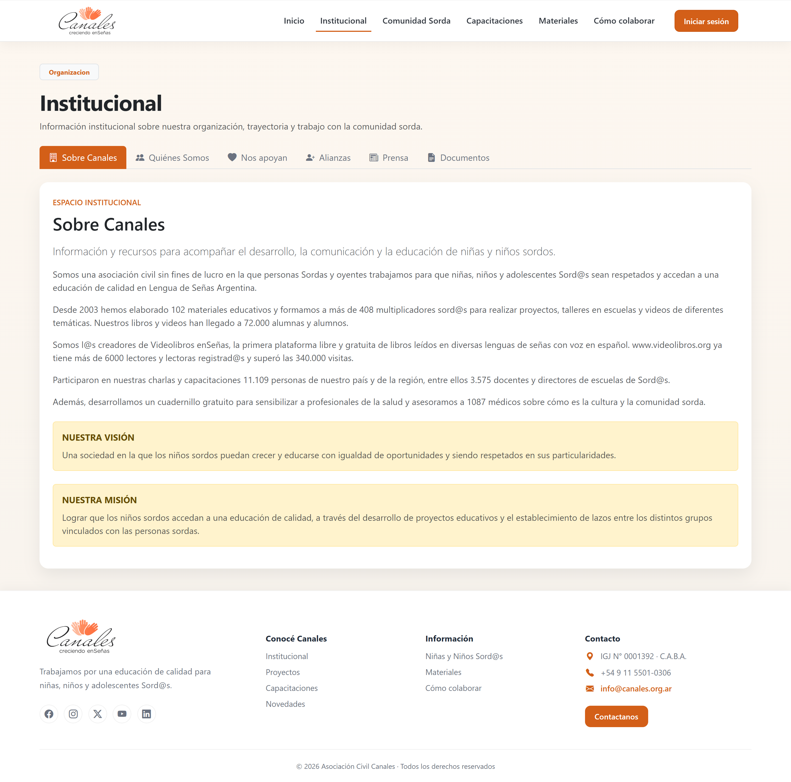
4. Comunidad
La sección Comunidad reúne contenidos orientados a las personas y familias vinculadas con la Asociación Civil Canales y la comunidad sorda.
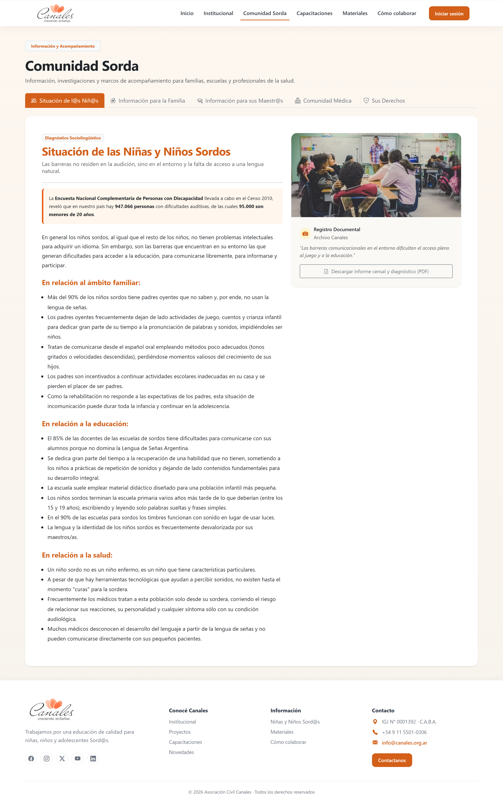
5. Capacitaciones
La plataforma contempla un espacio destinado a las capacitaciones y actividades formativas de la organización.
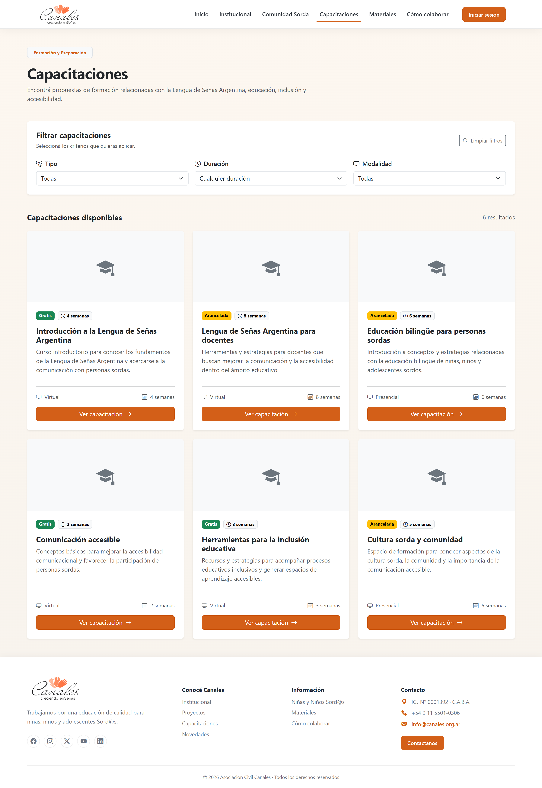
6. Materiales
La sección de materiales permite presentar recursos y contenidos destinados a la comunidad.

7. Donaciones
La plataforma contempla un espacio destinado a las personas que desean colaborar económicamente con la Asociación Civil Canales.
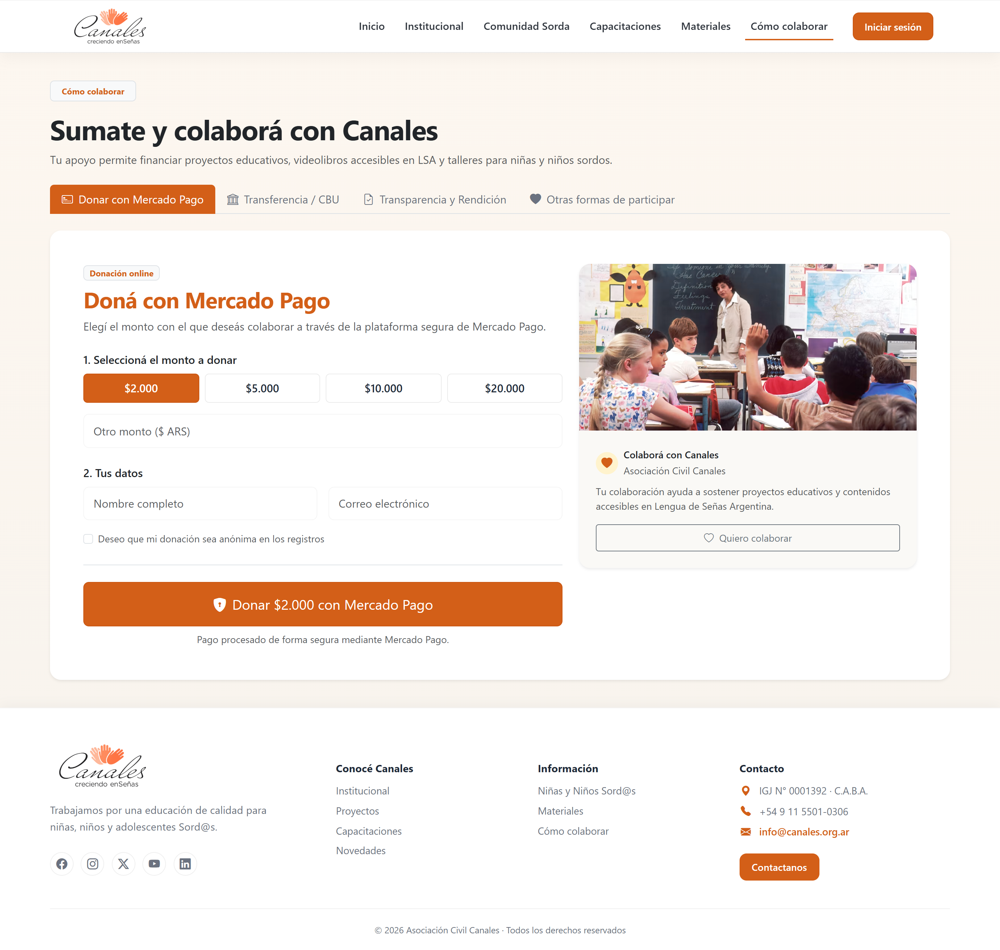
8. Inicio de sesión
Los usuarios que cuentan con acceso al área privada pueden ingresar mediante el formulario de autenticación.
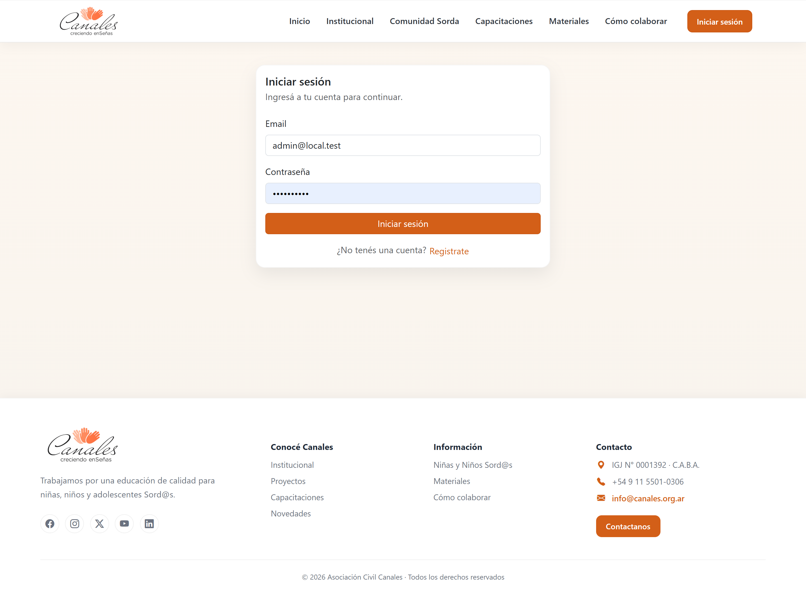
8.1 Acceso al sistema
- Ingresar las credenciales correspondientes.
- Seleccionar la opción de inicio de sesión.
- El sistema valida las credenciales ingresadas.
- En caso de autenticación correcta, se accede al área correspondiente al usuario.
9. Perfiles de usuario
La plataforma contempla diferentes perfiles de usuario según el rol asignado. Actualmente se dispone de la pantalla general de perfil, mientras que los perfiles específicos de Docente y Estudiante continúan en desarrollo.
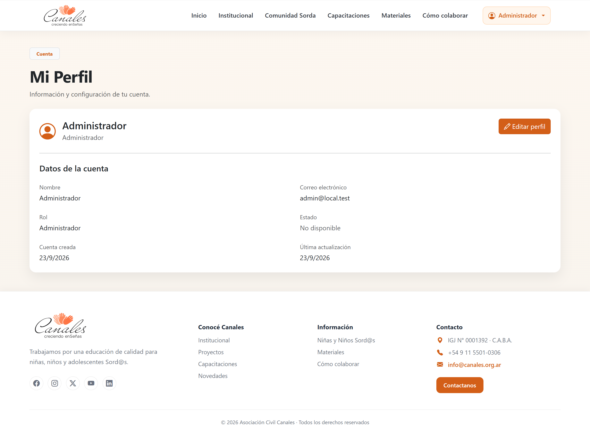
9.1 Estado de los perfiles
| Perfil | Estado |
|---|---|
| Administrador | Perfil y funcionalidades administrativas en desarrollo. |
| Docente | Pendiente de completar el perfil y las funcionalidades específicas del rol. |
| Estudiante | Pendiente de completar el perfil y las funcionalidades específicas del rol. |
| Visitante | Acceso al contenido público sin autenticación. |
10. Panel administrativo
El panel administrativo constituye el área destinada a la gestión interna de los contenidos y funcionalidades de la plataforma. Actualmente se encuentran disponibles algunas vistas iniciales, mientras que los diferentes módulos de gestión y CRUD continúan en implementación.
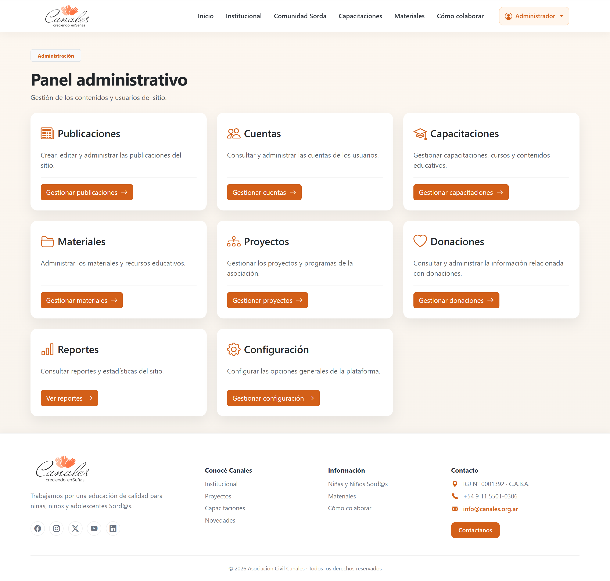
10.1 Gestión de publicaciones
El panel contempla un módulo destinado a la gestión de publicaciones. Esta funcionalidad permitirá administrar el contenido publicado en el sitio y sus correspondientes estados.
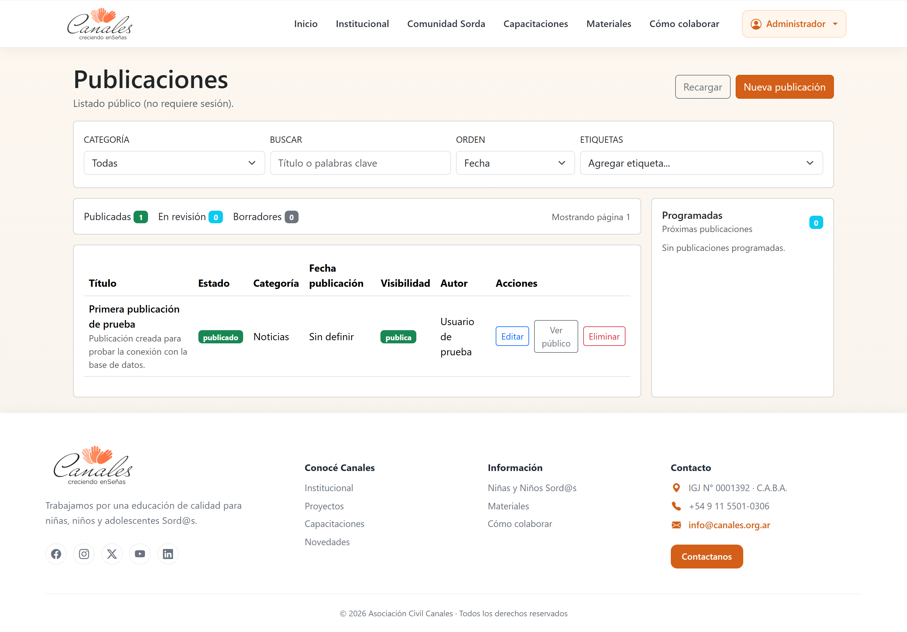
10.2 Gestión de cuentas
El panel también cuenta con una vista inicial para la gestión de cuentas de usuario. Esta sección será adaptada a los roles y permisos definidos para la plataforma.
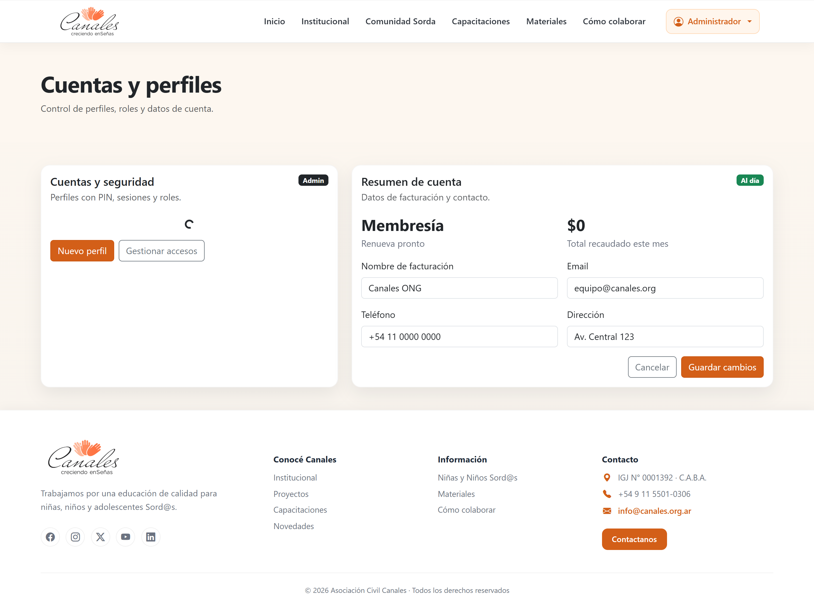
10.3 Otros módulos administrativos
Además de publicaciones y cuentas, el panel contempla diferentes módulos de gestión relacionados con las funcionalidades definidas para el proyecto.
| Módulo | Estado |
|---|---|
| Publicaciones | En modificación |
| Cuentas y usuarios | En modificación |
| Capacitaciones | Pendiente |
| Materiales | Pendiente |
| Donaciones | Pendiente |
| Otros CRUD administrativos | Pendiente |
11. Estado actual de las funcionalidades
El proyecto se encuentra en una etapa activa de desarrollo. Las pantallas presentadas en este manual reflejan el estado actual de la interfaz y pueden modificarse a medida que se incorporen, implementen y validen nuevas funcionalidades.
| Área | Estado |
|---|---|
| Sitio institucional | Disponible |
| Navegación responsive | Disponible |
| Capacitaciones | En desarrollo |
| Materiales | En desarrollo |
| Donaciones | En desarrollo |
| Autenticación | En desarrollo |
| Perfiles de usuario | En desarrollo |
| Perfil de Docente | Pendiente |
| Perfil de Estudiante | Pendiente |
| Panel administrativo | En desarrollo |
| Gestión de publicaciones | En modificación |
| Gestión de cuentas | En modificación |
| CRUD restantes | Pendiente |